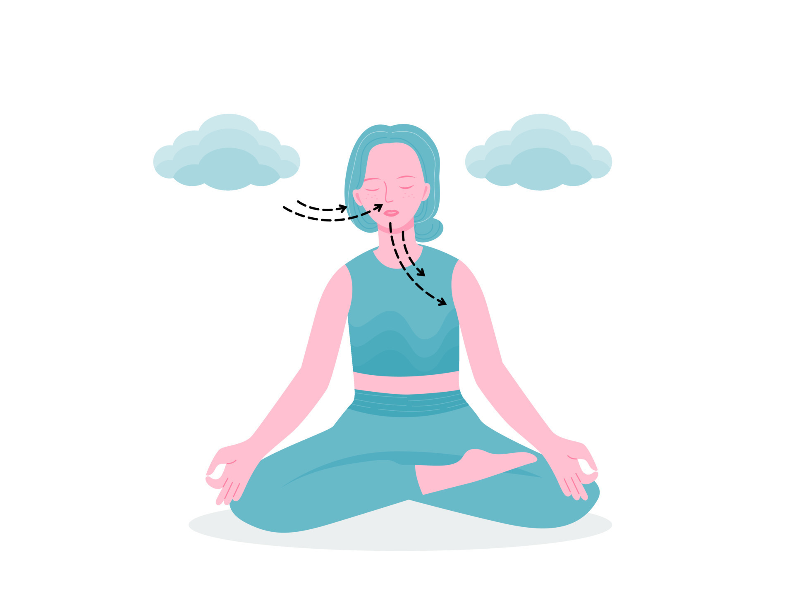
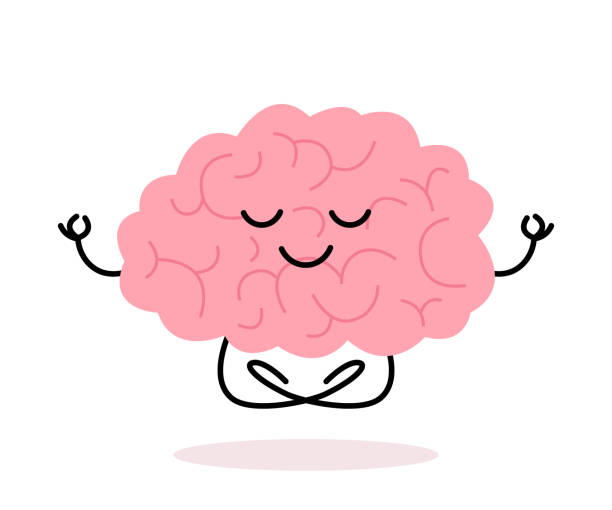

Doing mindful guided meditations can greatly improve your mental health. Try Buddhist mediatations, breathwork, muscle relaxation and mantra mediation. All of these methods are great ways to detress and focus on self-care. It can be as simple as typing in a quick 5 minute video and taking a break or being mindful of your surroundings, mental health is about taking time for you.
Click here for some guided mediatations!
Proper mindful self-care, big or small, can have positive lasting changes to both your mental and physical health. Here are some easy tips that can help destress and uplift you!
Mental Health affects not only our thoughts and emotions, but it can greatly affect our actions and physical choices too. Prioritizing a strong mental health can help you handle stress, relate to others, and make the best life choices for your present and future.
